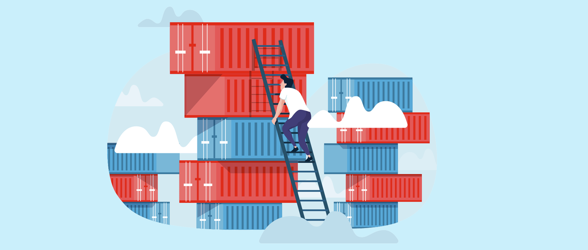

愈发复杂的应用程序正在依靠微服务来保持可扩展性和提升效率。Kubernetes为微服务提供了完美的环境，并能够让其与Kubernetes的工具组件和功能兼容。当应用程序的每个部分放置在一个容器中，整个系统就会更具可伸缩性。
微服务和容器的运作方式也适合当下的CI/CD工作流程，即无需关闭整个系统进行更新，因为可以分别更新每个微服务（容器）。但是，这会使容器或pod的生命周期缩短，其IP地址会发生变化。
在应用程序及其微服务的生命周期中，其中某些部分可能会出现错误，无法运行，进而导致意外状况，IP地址也很有可能发生变化。此时，服务网格可以帮助应用程序重新路由、提升安全性。

在我们了解如何管理服务以及如何高效建立服务发现之前，我们必须了解服务发现所面临的首要挑战：IP分配问题。具体而言，Kubernetes将IP地址动态分配给Pod和服务的方式。
我们固然可以为单个Pod和服务定义IP地址，但这样做会限制Kubernetes环境的可伸缩性。在默认情况下，环境在每次重新启动集群、pod或服务时，任意资源都会获得新的IP地址，因此我们只能对服务使用唯一的名称。
为了克服这一问题，你可以使用两种方法。其一，查看服务的环境变量。与Docker允许容器相互通信的方式类似，Kubernetes允许你扫描注入到容器中的环境变量。
如果你有在多个端口上运行的服务，你可以运行kubectl exec memcached-rm58b en命令，然后对服务名称进行快速grep操作，之后将会显示分配给该服务的可用IP地址和端口。不过，这并不是管理服务发现的最有效方法。因为，这种方法中依赖的服务必须在 pod 启动之前就存在，不然是不会出现在环境变量中的。
长远来看，以下阐述的第二种方法通常被认为效率更高，这得益于Kubernetes的插件Kube-DNS。我们先来了解什么是Kube-DNS。顾名思义，Kube-DNS是充当内部DNS解析器的附加组件。它是一个数据库，其中包含用于查找的键值对。键是Kubernetes服务的名称，值是服务所运行的IP地址。
Kube-DNS仅依赖命名空间，无需以其他方式配置Pod和服务，甚至无需修改集群、Pod和服务的配置文件即可进行基于DNS的服务发现。
Kube-DNS同时也支持高级DNS查询以及DNS策略。例如，你可以对每个Pod进行配置，将其配置为遵循与其运行的节点不同的DNS属性。这意味着你可以使用私有DNS空间来自定义pod之间如何进行通信。
这一方法还能更进一步，在每个pod的基础上配置DNS策略。你需要做的就是将节点DNS策略设置为“None”，然后手动配置每个Pod以满足你的特定需求。
正如前文所述，你可以使用参数来进一步影响Pod之间和服务之间的通信方式。Kubernetes服务发现支持对高级控件使用label和selector，特别是在管理复杂集群时，label尤为方便。你可以将label分配给组件和容器，以便于识别。
Kubernetes处理label和selector的方式使得这些参数更易于使用。本质上，它们时添加到元数据中的简单键值参数。也就是说，它们实际上并不会影响系统或环境中的其他部分，你可以在复杂的环境中跨pod和服务（甚至跨节点）自由使用label和selector。
接下来，我们要使用副本控制器。同样，顾名思义，它是一个可以使Kubernetes的系统具有高可用性和可伸缩性的工具。你可以使用副本控制器来创建和管理pod副本并且维护高可用。同时，你也可以轻松地一次性删除pod及其副本。
要完成设置，我们需要使用与现有基础架构和平台相关的高级服务发现方法。AWS Cloud Map是一个十分有意思的例子。AWS环境中的应用程序资源可以拥有唯一的名称，并且那些资源会被Cloud Map自动映射。它们注册完成后，服务会自动变为可发现的，并且在启动Pod或服务后立即进行注册过程。
现在有一个新的方法，通过使用服务网格让管理微服务的复杂阵列变得容易。服务网格标准化了服务和Pod的通信方式。如果你要创建一个高可用的系统，那么在环境中使用服务网格来维护Pod的可见性是一个完美的解决方案。
但是，如果你的环境在AWS上，则可以以AWS App Mesh的形式利用其服务网格功能。它会自动处理所有事情，包括流量路由、流量均衡、调用以及使用API调用的circuit breaking。所有微服务都能够启用API Mesh，以简化管理。由于此工具是Amazon生态的一部分，因此它会自动和Amazon EKS、IAM等其他工具一起使用。
Kubernetes服务发现使得容器平台具有强大功能以及灵活性，服务网格等方法无疑通过标准化使Kubernetes服务发现更加强大。只要服务在运行，就可以使正确的API调用在每个Pod之前来回传递数据而不会中断。